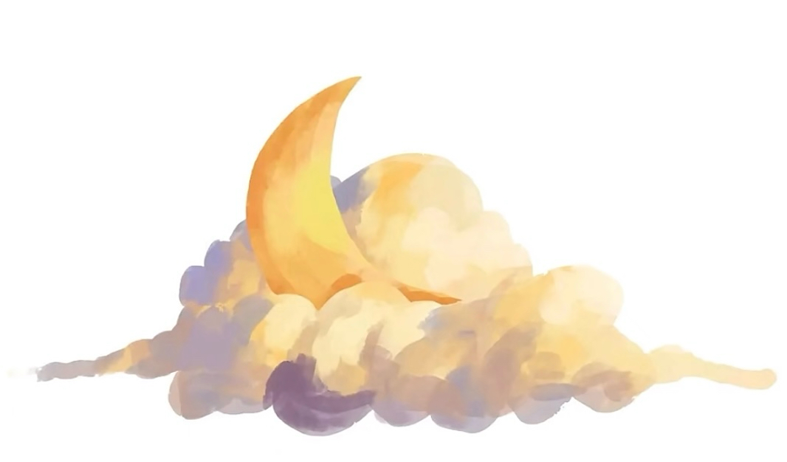

给未来的我
留一个位置。卡通角色 · 稍后登场
留一个位置。卡通角色 · 稍后登场

A LITTLE ABOUT ME
一起把想法，
变成作品。
01 / PRACTICE
从想法，到
可以体验的作品。
我关注创意如何落地，也在意作品为什么值得被创造，以及怎样被看见、被理解。
BETWEEN IDEAS & MAKING
随页面滚动 · 可横向滑动 · 点击查看完整图片
02 / SELECTED WORKS
我做过的作品。
三件个人项目，分别探索创意规划、桌面互动与产品表达。
左右拖动浏览 · 点击票面，看看它的故事
03 / BEYOND WORK
作品之外，
也想认识你。
如果你也有想尝试的点子，或对技术、设计、影像和独立创作感兴趣，期待在一次比赛、一个小项目，或一次交流中认识你。
保持好奇，让想法发生。— 小雨